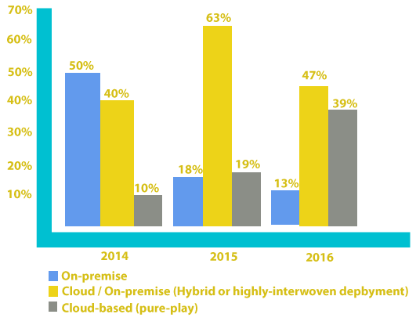

Empresa Alemana, fundada en 1972 lider mundialen software de gestion de negocios, con aplicaciones y servicios a empresas de todos los tamaños y sectores
Computo en la nube
SAP en la nube es una gestión totalmente integrada de soluciones empresariales de software diseñada para empresas que desean obtener los beneficios de las aplicaciones empresariales sin la necesidad de una gran infraestructura de TI Gestione mejor en solo semanas, obtenga y utilice recursos de computación de una manera absolutamente innovadora con soluciones en la nube listas para ser implementadas. Pague solamente lo que necesita, con un mínimo gasto de capital inicial y gastos operativos más flexibles, y obtenga beneficios rápidamente. Nuestras soluciones en la nube lo ayudan a obtener la flexibilidad que necesita para innovar, planificar el crecimiento y adaptarse a los cambios a la velocidad de la luz.
CLOUD: Tendencia del mercado
- 
SAP Sales Ondemand.
Trabaje con más inteligencia. Venda con más inteligencia. Gane más.
Incorporación de los clientes – Nuestro servicio de incorporación de clientes incluye un administrador del éxito de los clientes dedicado, validación del ámbito y un mapa de soluciones, instalación y configuración, y plantillas predefinidas para cargar los datos maestros clave. Así, usted puede comenzar a usar SAP Sales OnDemand en cuestión de días. La capacitación para los usuarios finales es sencilla y concisa.
Servicios de valor agregado – Usted puede adaptar la solución para satisfacer sus necesidades específicas. Los servicios opcionales pueden utilizarse para ayudar con la limpieza de los datos, la creación de reportes específicos para su negocio, consultas, dashboards, y la inclusión de usuarios móviles.
Soporte continuo y servicios – Se brinda una mesa de ayuda y soporte funcional para ayudar a sus usuarios a responder rápidamente a sus preguntas.
SAP Travel Ondemand
Para una sencilla gestión de gastos de viaje.
SuccessFactors an SAP Company
Software para la ejecución del negocio (BizX) entrega resultados al negocio alineando a las personas con los objetivos y optimizando el desempeño de las mismas; de esta manera promueve que el capital humano sea una verdadera ventaja competitiva para la organización. SuccessFactors entrega la más completa solución para la administración del talento, análisis y planeación de la fuerza laboral, y los combina con la siguiente generación de aplicaciones centrales de información RH, que mejoran la perspectiva ejecutiva y la toma de decisiones. SuccessFactors ayuda a que las organizaciones tengan la gente adecuada con las habilidades apropiadas realizando el trabajo de mayor valor y significado para el negocio.
La suite para ejecución de negocio de SuccessFactors incluye:
SAP Business ByDesing.
Es la solución de negocio más completo, integrado y adaptable basado en la nube que se ofrece on-demand. Esta solución de software como servicio (SaaS), está diseñada especialmente para empresas en desarrollo que quieran tener un crecimiento rentable. Le ayuda a racionalizar y optimizar todas las áreas de negocio, la solución proporciona transparencia y control sobre sus operaciones por lo que pueden inmediatamente identificar y responder a los problemas y oportunidades. Proporciona los conocimientos detallados y funcionales de una solución de gestión de negocios a gran escala que se pueden manejar desde una sola aplicación sin la necesidad de una infraestructura de TI costosa.
SAP Hanna
No existe un enfoque no adecuado o incorrecto. La elección siempre es situacional, y la misma organización puede adoptar estrategias muy diferentes en función de la tecnología y el mo mento. De modo que veamos cada uno de ellos específicamente en el contexto de SAP HANA y cuándo y por qué su organización podría adoptarlo.